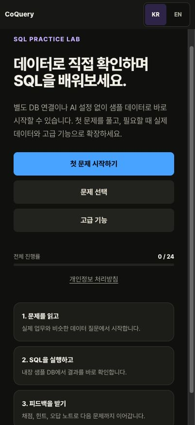

COQUERY / SQL PRACTICE
직접 실행하고,
결과로 이해하는
SQL 학습.
샘플 데이터에서 쿼리를 실행하고, 결과와 피드백을 살펴보세요. 별도 데이터베이스 연결 없이 연습을 시작할 수 있습니다.
iPhone · iPad용 학습 앱
정식 출시를 준비하고 있습니다.

READ / RUN / REVIEW
질문에서 시작해,
결과를 확인하는 연습.
01 / 질문 읽기
어떤 데이터가 필요할까요?
문제와 샘플 스키마를 살펴보고, 확인할 조건을 정합니다.
02 / 쿼리 실행하기
직접 결과를 확인하세요.
샘플 데이터에 SQL을 실행하고, 반환된 표를 읽습니다.
03 / 피드백 살펴보기
다시 시도하며 이해하세요.
채점과 힌트, 시도 기록을 참고해 쿼리를 고쳐 봅니다.
BETA STATUS
정식 출시를
준비하고 있습니다.
샘플 데이터로 SQL을 연습하는 iOS 앱을 준비하고 있습니다. 앱과 안내 내용은 개발 진행에 맞춰 업데이트할 예정입니다.
NEXT DIRECTION / 기획 단계
조건과 관계를 다루는
새 학습 방향.
조건을 바꾸고 관계를 살펴보는 개념 퍼즐을 기획하고 있습니다. 개발과 검증을 진행하며 구체적인 내용을 안내하겠습니다.
BEFORE YOU START
처음 살펴보시나요?
가입이나 실제 DB 연결이 필요한가요?
iOS 학습 모드는 계정이나 운영 데이터베이스 연결 없이 샘플 데이터로 연습하는 방식입니다.
지금 App Store에서 받을 수 있나요?
정식 출시를 준비하고 있습니다. 공개 다운로드가 시작되면 이 페이지에서 안내하겠습니다.
문제가 생기면 무엇을 남기면 되나요?
기기 모델, iOS 버전, 앱 버전과 재현 순서를 정리해 TestFlight 피드백으로 보내 주세요. 비밀번호나 실제 DB 정보는 제외해 주세요.